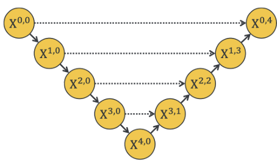
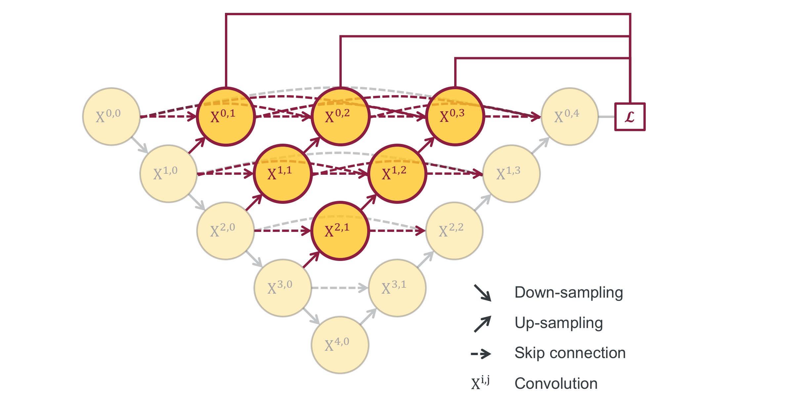
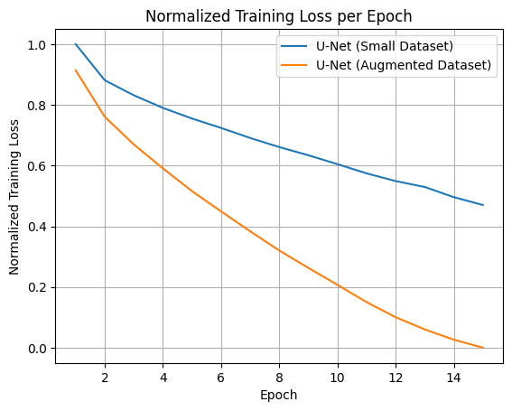

U-Net
A simpler encoder-decoder architecture with direct skip connections between matching layers.
- Faster training
- Lower complexity
- Works well on small datasets

This project explores brain tumor segmentation using convolutional neural networks, comparing U-Net and U-Net++ architectures on MRI datasets.
The goal is to understand how architectural complexity and dataset size affect segmentation accuracy using IoU and Dice metrics.
U-Net is a convolutional encoder-decoder network designed for biomedical image segmentation, combining low-level spatial information with high-level semantic features using skip connections.
U-Net++ improves this design by introducing dense skip connections and intermediate nodes, allowing better multi-scale feature aggregation and more flexible depth selection.

U-Net uses direct skip connections, while U-Net++ introduces nested skip pathways to improve feature fusion and segmentation accuracy.
A simpler encoder-decoder architecture with direct skip connections between matching layers.
Extends U-Net with dense skip connections and intermediate feature maps for better performance.
Performance was evaluated using Dice score and Intersection over Union (IoU). Results show how dataset size impacts model effectiveness.
U-Net demonstrated more stable performance on smaller datasets, while U-Net++ required larger datasets to fully utilize its architecture.
Data augmentation improved performance for both models, but U-Net benefited more due to its simpler structure.
